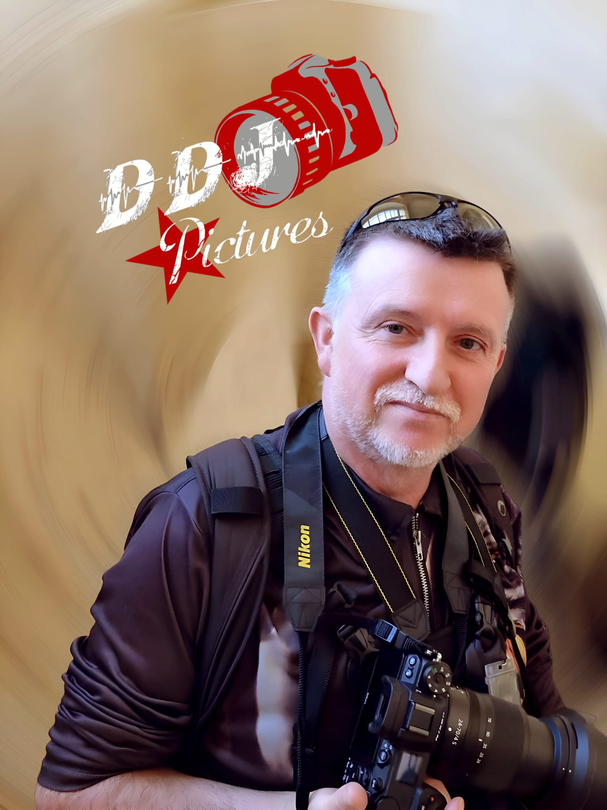

Eric Didierjean
Photographe — Nancy & Grand Est
J’aime créer des images naturelles, élégantes et intemporelles.
Mariage, portrait ou événement : mon objectif est simple —
vous mettre à l’aise et raconter une histoire vraie, avec une lumière soignée.
Mon style : chaleureux, retouche discrète, approche humaine.
Mon process : échange → préparation → prise de vue → sélection → galerie privée.
L’art du métier
Une approche premium, naturelle et soignée : technique, direction et retouche au service d’un rendu authentique.
Mise en confiance & direction
Je vous guide avec des consignes simples pour obtenir des images naturelles, même si vous n’êtes pas à l’aise.
Naturel • Élégant
Voir des exemplesLumière & ambiance
Intérieur, extérieur, contre-jour : je m’adapte à chaque situation pour une lumière douce et flatteuse.
Douceur • Cohérence
Découvrir le styleComposition & storytelling
Détails, émotions, plans larges, moments clés… pour raconter votre histoire, sans forcer.
Émotion • Narration
Explorer le portfolioRetouche naturelle
Couleurs harmonisées, peau respectée, rendu soigné sans excès.
Propre • Intemporel
Discuter du projet